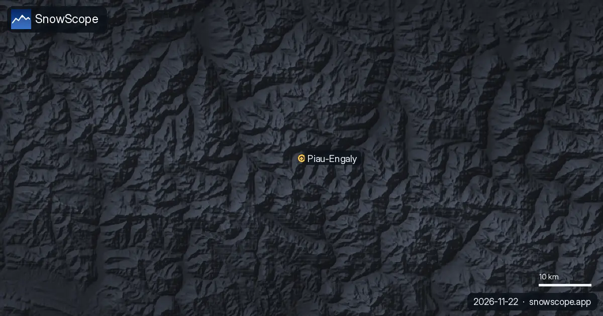

Piau-Engaly : pourquoi la station la plus haute des Pyrénées françaises garde sa neige
Piau-Engaly est petite et haute : 32 km de pistes cartographiées sur 8 remontées, mais le bas du domaine est déjà à 1762 m et le sommet à 2527 m, dans le massif du Néouvielle au fond de la vallée d'Aure. Côté français des Pyrénées, cette altitude est rare, et cela se voit dans la neige. Notre historique de 46 hivers explique pourquoi la station est souvent blanche quand des voisines plus basses ne le sont pas.
Consultez les prévisions neige en temps réel pour Piau-Engaly sur l'application SnowScopeHauteurs de neige, alertes poudreuse et carte 3D, gratuitement.

Un départ tardif, puis un hiver solide
La première neige tient à mi-pente (2144 m) avant le 3 novembre dans la moitié des hivers, plus tard que dans les Alpes, parce que les Pyrénées reçoivent leurs grosses chutes des tempêtes atlantiques qui arrivent vraiment en décembre. Novembre laisse habituellement 5 cm ; décembre 30 cm à mi-pente et 39 cm au sommet. Un décembre riche atteint 71 cm, un pauvre 4 cm.
De janvier à mars : les mois atlantiques
Janvier apporte 63 cm à mi-pente, février 90 cm et mars 83 cm ; au sommet, la hauteur habituelle est de 119 cm en février et 111 cm en mars, le mois le plus enneigé là-haut. Le maximum hivernal habituel est de 88 cm en bas, 123 cm à mi-pente et 159 cm au sommet.
La semaine la plus sûre à mi-pente est la semaine 7, mi-février, avec 86 cm habituels et 83 % des hivers passés au-dessus de 50 cm. La moitié des hivers gardent 50 cm ou plus à mi-pente pendant 14 semaines.
Pourquoi le bas compte ici
Comme le village est en bas du domaine, le chiffre du bas est celui dans lequel on sort le matin. Un maximum habituel de 88 cm, entre 34 cm l'hiver le plus maigre et 159 cm le plus riche, c'est du ski aux pieds presque toute la saison. Les villages pyrénéens plus bas ne peuvent pas en dire autant.
Variabilité : la réserve pyrénéenne
Les Pyrénées varient plus d'un hiver à l'autre que les Alpes. À mi-pente, le maximum habituel est de 123 cm, mais l'hiver le plus pauvre s'est arrêté à 44 cm et le plus riche a atteint 206 cm. L'hiver dernier a culminé à 145 cm. Réserver fin février ou mars, quand la hauteur habituelle est la plus grande, est le moyen le plus simple de réduire le risque.
Mois par mois à trois altitudes
En décembre, un hiver habituel donne 21 cm en bas (1762 m), 30 cm à mi-pente (2144 m) et 39 cm au sommet (2527 m). En janvier, un hiver habituel donne 44 cm en bas (1762 m), 63 cm à mi-pente (2144 m) et 83 cm au sommet (2527 m). En février, un hiver habituel donne 61 cm en bas (1762 m), 90 cm à mi-pente (2144 m) et 119 cm au sommet (2527 m).
En mars, un hiver habituel donne 54 cm en bas (1762 m), 83 cm à mi-pente (2144 m) et 111 cm au sommet (2527 m). En avril, un hiver habituel donne 29 cm en bas (1762 m), 46 cm à mi-pente (2144 m) et 62 cm au sommet (2527 m).
Un hiver pauvre et un hiver riche
L'écart compte autant que la moyenne. À mi-pente, neuf févriers passés sur dix avaient au moins 25 cm et un sur dix 141 cm ou plus ; au sommet, la même fourchette va de 34 à 178 cm.
Sur l'hiver entier, le maximum à mi-pente est allé de 44 cm l'hiver le plus pauvre à 206 cm le plus riche, autour de 123 cm habituels ; au sommet de 53 à 270 cm autour de 159 cm. La neige a couvert le sol à mi-pente 168 jours dans un hiver habituel, et la première neige s'y est installée avant le 3 novembre dans la moitié des hivers. Ce sont des valeurs de modèle pour le domaine sur 46 hivers passés, pas des mesures de la station ; elles décrivent ce à quoi s'attendre, pas ce que les dameuses ajoutent.
Sur le long terme
Sur 46 hivers, le maximum habituel au sommet a à peine bougé, de 157 cm sur les 15 premiers hivers à 158 cm sur les 15 derniers. Les jours avec de la neige au sol à mi-pente sont passés de 180 à 160. L'altitude fait son travail.
Conseils aux skieurs
- Réserver février ou mars : l'hiver pyrénéen arrive tard et culmine tard.
- Toute la station est au-dessus de la limite habituelle de la neige : une année maigre fait moins mal ici qu'en vallée.
- Nos hauteurs sont une estimation pour le domaine d'après les hivers passés, pas des mesures de la station ; l'ouverture est sur le site officiel.
- La route depuis Saint-Lary monte jusqu'à la station : pneus hiver ou chaînes font partie du voyage.
Références et crédits
- Wikipédia, « Piau-Engaly », consulté le 22 November 2026. fr.wikipedia.org/wiki/Piau-Engaly
À propos de ces chiffres
Chiffres de neige : historique SnowScope, 46 hivers passés (1980-81 à 2025-26) à trois altitudes de la station, un modèle du passé corrigé de l'altitude (une estimation pour une zone, pas les bulletins de la station). Remontées, pistes et accès : les sources ci-dessous, vérifiées à la date indiquée.
Bulletins d'avalanche officiels: Météo-France – Bulletin d'estimation du risque d'avalanche
Citer ce bulletin
Pour la recherche, l'enseignement ou la presse : chiffres et graphiques réutilisables librement sous CC BY 4.0 avec cette citation.
SnowScope (2026), Piau-Engaly : pourquoi la station la plus haute des Pyrénées françaises garde sa neige, https://snowscope.app/blog/fr/2026/11/piau-engaly-why-the-highest-pyrenees-resort-keeps-its-snow.html, consulté le 2026-11-22
SnowScope (Atlas Labs). (2026, November 22). Piau-Engaly : pourquoi la station la plus haute des Pyrénées françaises garde sa neige. SnowScope snow reports. https://snowscope.app/blog/fr/2026/11/piau-engaly-why-the-highest-pyrenees-resort-keeps-its-snow.html
BibTeX
@misc{snowscope2026piauengalywhythehighestp,
author = {{SnowScope (Atlas Labs)}},
title = {Piau-Engaly : pourquoi la station la plus haute des Pyrénées françaises garde sa neige},
year = {2026},
month = nov,
howpublished = {\url{https://snowscope.app/blog/fr/2026/11/piau-engaly-why-the-highest-pyrenees-resort-keeps-its-snow.html}},
note = {Published 2026-11-22 10:49 UTC; accessed 2026-11-22}
}· CC BY 4.0 · Méthodes, données et outils →
Piau-Engaly : neige et température selon l'altitude, cet hiver vs l'hiver dernier (outils) →
Suivre Piau-Engaly
Gratuit : un message quand la neige arrive, et la météo chaque matin.
Autres bulletins neige

Comparez Grandvalira et les stations espagnoles en décembre 2026 pour les hauteurs de neige, l'altitude des remontées et les prix à partir de 49,00 EUR.

Pluie prévue alors que le niveau de congélation monte à 4 080 m ; la neige mesurée le 15 novembre est fine (moins de 20 cm) dans toutes les grandes stations des Pyrénées.
Moins de jours de neige aux 120 points étudiés dans les Pyrénées depuis 1980-81, surtout sous 1 500 m : notre série de 46 hivers et la recherche.